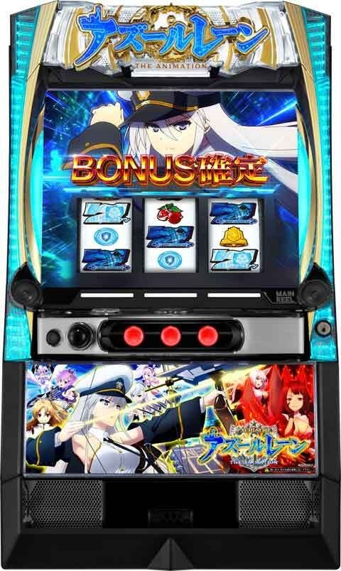
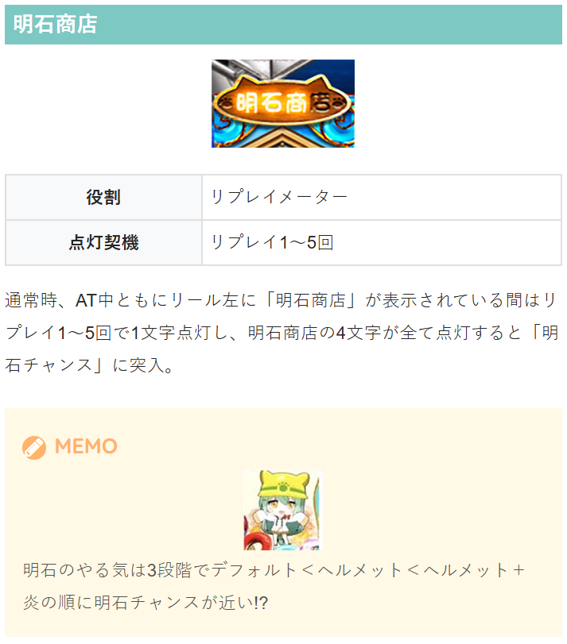
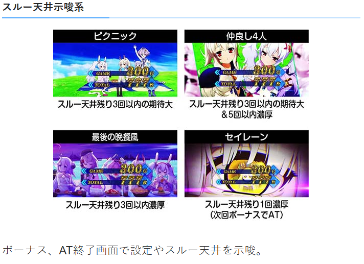
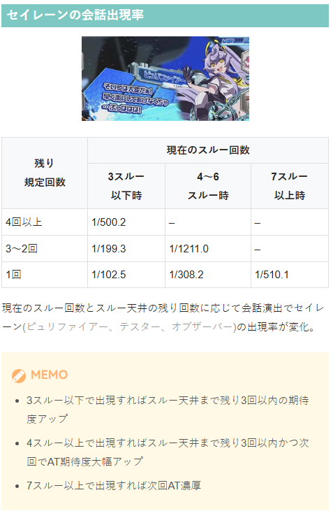
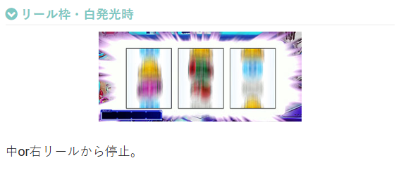
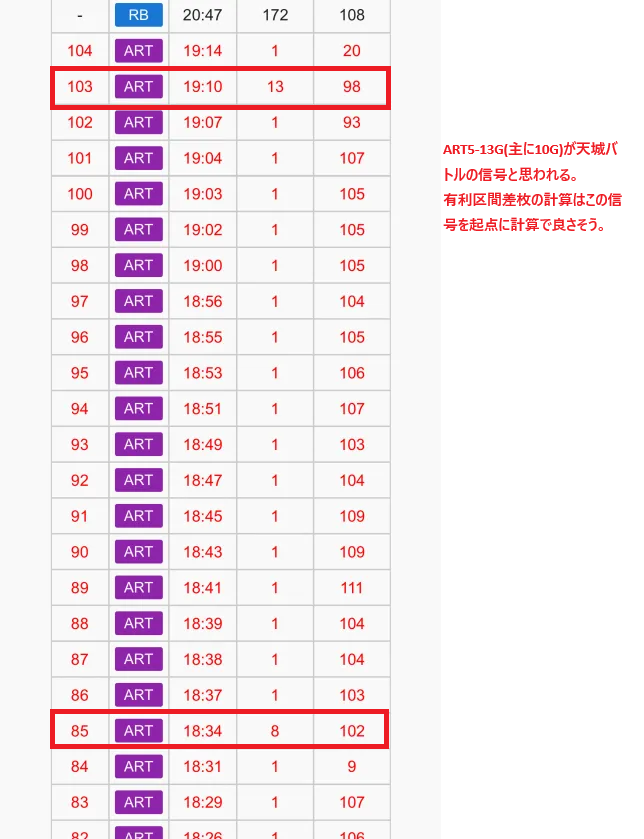
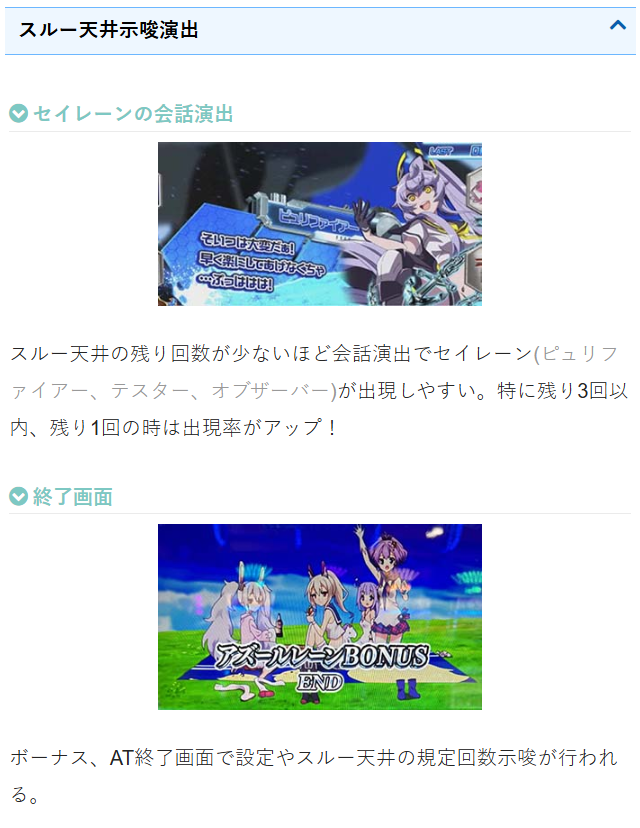
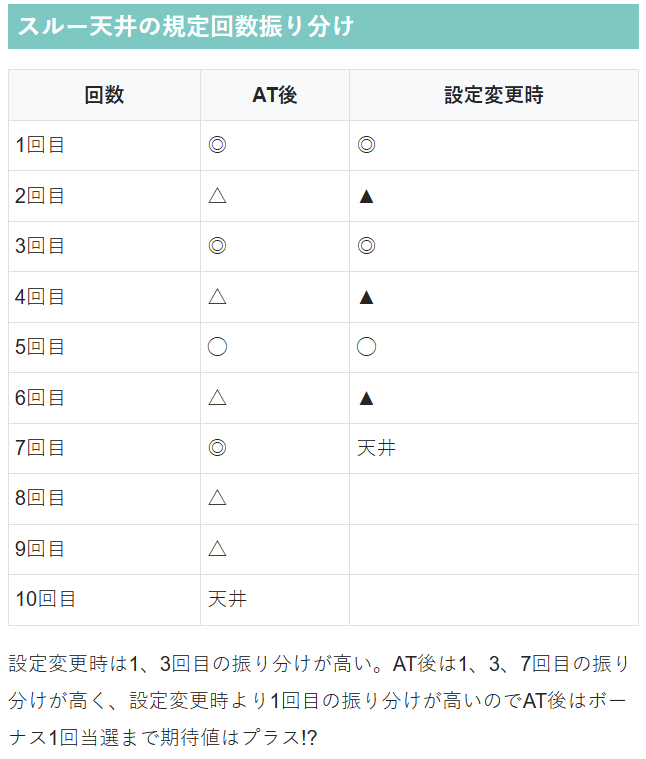
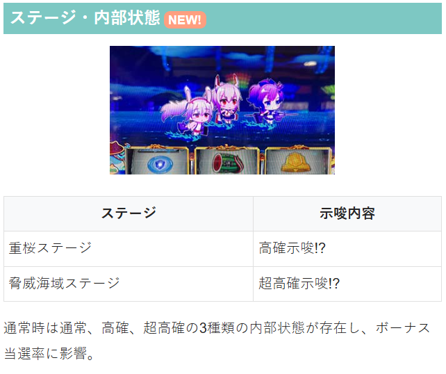
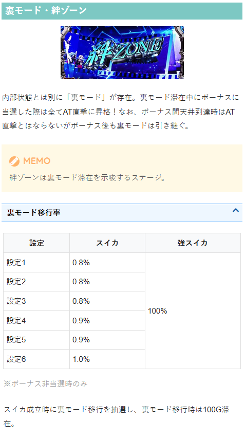

アズールレーン THE ANIMATION


狙い目
【リセット狙い】
0スルー 単体140Gから 3回以内天井示唆出た場合続行も考慮 60Gから
1スルー 200Gから（2スルー打つために）
2スルー 0Gから
3スルー 180Gから（4スルー以降打ち切りのため）
4スルー（5回目）以降 0Gから
【ゲーム数天井狙い】
0スルー差枚別ボーナス間天井狙い
差枚+2001枚以上 0Gから
差枚+1001枚から+2000枚 230Gから
差枚+501枚から-1000枚 180Gから
差枚-1001枚から-2000枚 100Gから
差枚-2001枚未満 60Gから
※差枚-2000枚未満は甘くなる傾向。積極的に行くなら0Gから打って示唆で押し引きはありかも？
1スルー以降別ボーナス間天井狙い
2スルー（3回目） 160Gから
6スルー（7回目） 50Gから ※AT間1000G以上 0Gから
7スルー（8回目） 積極派 0Gから
8スルー（9回目）以降 不問で0Gから
それ以外 240Gから
AT間天井狙い
1350Gから
【裏モード狙い】
強スイカを引いてボーナス非当選時は100％裏モードに移行。この場合は強スイカ後100G回す。
※強スイカは上段平行スイカ。弱スイカは右下がりに揃う。
【明石チャンス狙い】
3文字以上点灯していたら消えるまで打つ？
詳細不明

【有利区間関連狙い】
差枚+2000枚以上 0スルーを0Ｇからボーナス当選まで
【示唆等での押し引き】
脅威海域ステージは超高確示唆のため、ステージ変更まで打った方が良さそう。
終了画面別
セイレーン ボーナス当選まで
最後の晩餐風 AT当選まで
仲良し4人 AT後または設定変更後1回目に出現時は3回目ボーナスまで
ピクニック 設定変更後1.2回目出現時は3回目ボーナスまで。AT後攻めるなら同様に3回目ボーナスまで

セイレーンの会話
主に3スルー以下時の押し引きに使用出来そう。
会話演出が2回以上出れば規定回数3回以下が見込めそう。
例えば設定変更後、AT後の0スルー消化時に2回以上出現で3回目のボーナスまでといった押し引きが出来そう。
また、セリフのキャラでもピュリファイアー＜テスター＜オブザーバーと示唆が強くなると思われるため、テスターやオブザーバーはセリフ1回でも続行して良さそう？

やめ時
ボーナス後はスルー天井が近くないか注意してヤメ。AT後は即ヤメ or 1回目のボーナスを確認してヤメ。
その他
AT中の白発行時
中or右リールから停止させる

履歴について（天城バトル）





参考元
基本情報
- メーカー: 京楽
- 機械割: 97.9% 〜 114.9%
- 導入開始日: 2025年08月04日（月）
- ゲーム性概要: ●パチンコでも好評のアズールレーンがスマスロで登場 ●通常時はおもにボーナスからATを目指すゲーム性 ●ATは純増約2.5枚/Gのゲーム数管理型で、初期ゲーム数は特化ゾーンで決定 ●AT中はセイレーンバトル勝利で上乗せなどの報酬を獲得 ●BAR揃いで陣営が参戦するほどAT性能がアップ ●4陣営参戦で上位AT突入をかけたCZ「天城バトル」の権利をゲット ●天城バトル勝利で上位AT「異次元性能SSラッシュ」突入 ●上位ATは純増約5.1枚かつ、上乗せ性能大幅アップ ●上位AT終了後は天城バトルに再突入する


打ち方
打ち方・小役
打ち方（小役狙い）
［最初に狙う絵柄］ 左リール上段付近にBARを目押し。スイカ停止時以外は中＆右リールフリー打ちでOKだ。

［スイカ停止時は中＆右リールにスイカを目押し］

［レア役・共通ベルの停止例］

通常時の変則押しはNG
通常時は基本的に左1stでの消化を推奨だ。

AT中の中押し（小役狙い）
［最初に狙う絵柄］ AT中は変則押しもOK。変則押し必須の白フラッシュ発生時もフォローできるので中押しの青7がオススメだ。 強レア役の1確目も楽しむことができる。

［リプレイ中段停止時］ 成立役：ハズレorリプレイor弱チェリー 右リールをフリー打ちして、リプレイが左上がりテンパイした場合はチェリーなので、左リールにチェリーを目押し。 その他の停止形は左リールフリー打ちで消化しよう（ハズレorリプレイ）。

［ベル中段停止時］ 成立役：共通ベルorチャンス目

［スイカ中段停止時］ 成立役：弱スイカorチャンス目 右＆左リールにスイカを狙って、スイカが揃わなければチャンス目だ。

［チェリー中段停止時］ 成立役：強スイカor強チェリー 右リールにスイカを狙ってテンパイすれば強スイカ、スイカ非テンパイなら強チェリーになる。

AT中の白フラッシュ
AT中に白フラッシュが発生した場合、変則押し（中1st・右1st）をすると1/4で9枚ベルを獲得できるので、必ず変則押しで消化。左1stで消化すると9枚ベルを獲得することはできない。

解析情報通常時
小役関連
［設定差なし］小役確率
| 役 | 確率 |
|---|---|
| リプレイ | 1/7.9 |
| チャンス目 | 1/124.4 |
| 強チェリー | 1/327.7 |
| 強スイカ | 1/4096.0 |
［設定差あり］レア役確率
| 設定 | 共通ベル | 弱チェリー | 弱スイカ |
|---|---|---|---|
| 1 | 1/22.1 | 1/79.0 | 1/104.0 |
| 2 | 1/21.7 | 1/78.0 | 1/102.4 |
| 3 | 1/21.0 | 1/77.1 | 1/100.8 |
| 4 | 1/20.4 | 1/75.3 | 1/99.3 |
| 5 | 1/19.8 | 1/74.5 | 1/97.8 |
| 6 | 1/18.9 | 1/72.0 | 1/96.4 |
共通ベル、弱チェリー、弱スイカは高設定ほど引きやすい。
内部状態関連
内部状態
| 項目 | 内容 |
|---|---|
| 種類 | 通常・高確・超高確 |
| 初期状態移行契機 | 設定変更時・AT終了後 |
| 昇格契機 | レア役・明石チャンス成功 |
| 保障ゲーム数 | 10〜30G |
| 滞在中の抽選 | 上位状態ほど各役の海戦ボーナス当選率アップ |
通常時の内部状態は通常・高確・超高確の3種類で、上位の状態ほど各役の海戦ボーナス当選率がアップする。保障ゲーム消化後のレア役以外成立時に転落を抽選する。
［重桜ステージは高確示唆］

［脅威海域ステージは超高確示唆］

［設定変更時］内部状態移行率
| 移行先 | 移行率 |
|---|---|
| 通常 | 59.8% |
| 高確 | 39.8% |
| 超高確 | 0.4% |
［AT終了後］内部状態移行率
設定変更時は設定不問で抽選、AT終了後は若干だが高設定ほど高確以上へ移行しやすい。
［通常滞在時］内部状態移行率
| 役 | 通常のまま | 高確へ | 超高確へ |
|---|---|---|---|
| その他 | 99.6% | 0.4% | 一 |
| 弱スイカ・チャンス目 | 84.8% | 15.2% | 一 |
| 弱チェリー・強チェリー | 33.2% | 65.2% | 1.6% |
| 明石チャンス成功 | 50.0% | 48.4% | 1.6% |
［高確滞在時］内部状態移行率
| 役 | 通常へ | 高確のまま | 超高確へ |
|---|---|---|---|
| その他 | 8.2% | 91.8% | 一 |
| 弱スイカ・チャンス目 | 一 | 93.7% | 6.3% |
| 弱チェリー・強チェリー | 一 | 66.8% | 33.2% |
| 明石チャンス成功 | 一 | 66.8% | 33.2% |
［超高確滞在時］内部状態移行率
| 役 | 通常へ | 高確へ | 超高確のまま |
|---|---|---|---|
| その他 | 8.2% | 8.2% | 83.6% |
| 弱スイカ・チャンス目 | 一 | 一 | 100% |
| 弱チェリー・強チェリー | 一 | 一 | 100% |
| 明石チャンス成功 | 一 | 一 | 100% |
保障ゲーム数振り分け
| ゲーム数 | 高確移行時 | 超高確移行時 |
|---|---|---|
| 10G | 89.8% | 一 |
| 20G | 5.1% | 93.8% |
| 30G | 5.1% | 6.3% |
保障ゲーム数消化後のレア役以外で転落が抽選される。
モード
裏モード解説

裏モードはスイカを契機に移行。裏モード中は非裏モード中と同じ抽選値で海戦ボーナスが抽選されるが、当選したボーナスはすべてAT直撃に書き換えられる。 ボーナス間天井到達時は対象外だが、海戦ボーナス終了後も裏モードは継続。 また、裏モードはおもに絆ゾーン滞在で示唆される。
裏モード性能
| 項目 | 内容 |
|---|---|
| 突入契機 | ボーナス非当選の弱スイカor強スイカの一部 ※強スイカは移行濃厚 |
| 滞在中の恩恵 | 当選した海戦ボーナスがすべてAT直撃に変換 |
| 継続ゲーム数 | 100G |
裏モード移行率（ボーナス非当選時のみ抽選）
| 設定 | 弱スイカ | 強スイカ |
|---|---|---|
| 1 | 0.8% | 100% |
| 2 | 0.8% | 100% |
| 3 | 0.8% | 100% |
| 4 | 0.9% | 100% |
| 5 | 0.9% | 100% |
| 6 | 1.0% | 100% |
海戦ボーナス非当選時のスイカ成立時に移行を抽選。強スイカは移行濃厚なので、ボーナスに当選しなくても100G間は続行したい。
明石チャンス
明石チャンス解説
［突入経路は明石商店の完成］ 通常時・AT中ともにリール左側に「明石商店」の看板が表示されている間は、リプレイを引くごとに「明・石・商・店」の文字点灯を抽選（平均リプレイ1〜5回で1文字点灯）。全文字が点灯すると明石商店が完成して明石チャンスへ突入する。 明石（キャラ）の姿で明石チャンスまでの近さを示唆。ヘルメットなし＜ヘルメット装着＜ヘルメット＋炎の順でチャンスとなる。

［明石チャンス中の抽選］ 明石チャンス中はリプレイかレア役を引けば成功となり、海戦ボーナス＆内部状態アップ（高確・超高確移行）を抽選。 レア役時は通常時の海戦ボーナス＆内部状態アップ抽選を並行しておこなわれるため、大チャンスだ。

明石チャンス性能
| 項目 | 内容 |
|---|---|
| 突入契機 | リプレイで明石商店完成 |
| 継続ゲーム数 | 3G |
| 滞在中の抽選 | リプレイorレア役成立で成功になり 内部状態アップや海戦ボーナスを抽選 |
※裏モード中はボーナス当選がAT直撃に変化
明石チャンス成功時の内部状態昇格率
| 状態 | 昇格率 |
|---|---|
| 通常滞在時→高確へ | 48.4% |
| 通常滞在時→超高確へ | 1.6% |
| 高確滞在時→超高確へ | 33.2% |
明石チャンス成功時の海戦ボーナス当選率
| 設定 | 当選率 |
|---|---|
| 1 | 25.0% |
| 2 | 25.1% |
| 3 | 25.4% |
| 4 | 25.8% |
| 5 | 26.1% |
| 6 | 26.4% |
※海戦ボーナス当選率は内部状態不問
海戦ボーナス抽選
海戦ボーナス当選率 通常滞在時
| 設定 | その他 | 弱チェリー | 弱スイカ |
|---|---|---|---|
| 1 | 0.003% | 0.4% | 2.0% |
| 2 | 0.003% | 0.4% | 2.0% |
| 3 | 0.004% | 0.4% | 2.2% |
| 4 | 0.004% | 0.5% | 2.4% |
| 5 | 0.004% | 0.6% | 2.6% |
| 6 | 0.005% | 0.6% | 2.8% |
| 設定 | 強チェリー・ チャンス目 | 強スイカ | 明石チャンス成功 |
| 1 | 20.4% | 50.0% | 25.0% |
| 2 | 20.5% | 50.0% | 25.1% |
| 3 | 21.0% | 50.0% | 25.4% |
| 4 | 21.8% | 50.0% | 25.8% |
| 5 | 22.4% | 50.0% | 26.1% |
| 6 | 23.0% | 50.0% | 26.4% |
高確滞在時
| 設定 | その他 | 弱チェリー | 弱スイカ |
|---|---|---|---|
| 1 | 0.006% | 0.8% | 20.3% |
| 2 | 0.006% | 0.8% | 20.4% |
| 3 | 0.007% | 0.9% | 20.7% |
| 4 | 0.008% | 1.0% | 21.0% |
| 5 | 0.009% | 1.1% | 21.3% |
| 6 | 0.01% | 1.2% | 21.6% |
| 設定 | 強チェリー・ チャンス目 | 強スイカ | 明石チャンス成功 |
| 1 | 55.1% | 100% | 25.0% |
| 2 | 55.2% | 100% | 25.1% |
| 3 | 55.5% | 100% | 25.4% |
| 4 | 55.9% | 100% | 25.8% |
| 5 | 56.2% | 100% | 26.1% |
| 6 | 56.5% | 100% | 26.4% |
超高確滞在時
| 設定 | その他 | 弱チェリー | 弱スイカ |
|---|---|---|---|
| 1 | 0.78% | 3.1% | 40.3% |
| 2 | 0.78% | 3.2% | 40.4% |
| 3 | 0.78% | 3.3% | 41.0% |
| 4 | 0.78% | 3.4% | 41.7% |
| 5 | 0.78% | 3.5% | 42.3% |
| 6 | 0.78% | 3.7% | 43.0% |
| 設定 | 強チェリー・ チャンス目 | 強スイカ | 明石チャンス成功 |
| 1 | 80.1% | 100% | 25.0% |
| 2 | 80.2% | 100% | 25.1% |
| 3 | 80.6% | 100% | 25.4% |
| 4 | 81.2% | 100% | 25.8% |
| 5 | 81.7% | 100% | 26.1% |
| 6 | 82.2% | 100% | 26.4% |
［設定差あり］海戦ボーナス当選契機別の青7選択率
明石チャンス成功時の当選率は内部状態不問。強スイカを除き、基本的に高設定ほど当選率が優遇される。
前兆
本前兆中のレア役・抽選内容
| 本前兆の種類 | 抽選内容 |
|---|---|
| AT非当選の海戦ボーナス | AT濃厚の海戦ボーナス昇格 |
| AT濃厚の海戦ボーナス | セイレーンバトルストック |
海戦ボーナスの平均前兆ゲーム数（レア役契機）は約14G。本前兆中はレア役で昇格やセイレーンバトルストックを抽選するためヒキ損なしだ。
フリーズ
ロングフリーズ動画
格言フリーズから発展する可能性あり。上位AT直行＋ループ率90%の海戦アタック濃厚だ。
ロングフリーズ
上位AT直行のうえ、90%ループの海戦アタックがついてくる。


ロングフリーズ性能
| 項目 | 内容 |
|---|---|
| 突入契機 | リプレイの一部 |
| 発生確率 | 1/161319.4 |
| 恩恵 | 上位AT＋ループ率90%の海戦アタック |
解析情報ボーナス時
1枚役の役割
1枚役確率
| 種別 | 確率 |
|---|---|
| 1枚役A | 1/16.4 |
| 1枚役B | 1/8192.0 |
| 1枚役C | 1/21.8 |
| 1枚役D | 1/2048.0 |
| 1枚役E | 1/95.0 |
| 1枚役F | 1/138.8 |
状況ごとの役割（変換結果）
| 種別 | 海戦アタック・ 覚醒エンターP | ボーナス中の BAR揃い高確 | レアキューブモード |
|---|---|---|---|
| 1枚役A | 白7フェイク | BARフェイク | レアキューブ目A |
| 1枚役B | 白7フェイク | BARフェイク | レアキューブ目B |
| 1枚役C | 白7揃い | BAR揃い （※1） | レアキューブ目A |
| 1枚役D | 白7揃い | BARフェイク | レアキューブ目B |
| 1枚役E | 白7揃い | BARフェイク | レアキューブ目A |
| 1枚役F | 白7揃い：1確目 | BARフェイク | レアキューブ目B |
※1…初回BAR揃い後は抽選でBAR揃いにするかを決定 ※エンターP…エンタープライズ
1枚役の役割別合算確率
| パターン | 確率 |
|---|---|
| 白7フェイク | 1/16.4 |
| 白7揃い | 1/15.6 |
| BARフェイク | 1/12.6 |
| レアキューブ目A | 1/8.5 |
| レアキューブ目B | 1/128.0 |
海戦アタックや覚醒エンタープライズとレアキューブモードが複合している時は、レアキューブ目の抽選が優先されるため白7を狙え（フェイク・白7揃い）は発生しないが、すべてのレアキューブ目（1枚役）で継続率昇格を抽選するため強力。 ちなみに、上記以外に上段ベルの1枚役もあるが、こちらは単なる1枚ベルで、状況によって見た目が変化することはない。
アズールレーンボーナス-海戦-（海戦ボーナス）
海戦ボーナス概要
青7揃い・白7揃いの2種類があり、消化中のレア役時抽選とあらかじめ決まっている規定回数でAT当選の有無が決定。 青7揃いは消化中の抽選が優遇されるため、AT期待度が高い。


海戦ボーナス性能
| 項目 | 内容 |
|---|---|
| 突入契機 | レア役時の抽選、明石チャレンジ成功時の抽選 |
| ボーナス絵柄 | AT期待度は白7揃い＜青7揃い ※青7揃いのAT期待度は62.4%（規定回数到達込み） |
| 継続ゲーム数 | ベルナビパート（ベルナビ10回）＋ ジャッジパート（10G） |
| 平均獲得枚数 | 約100枚 |
| AT抽選 | 規定回数到達時はAT濃厚、 AT非当選時はリプレイ・レア役でAT抽選 |
青7海戦ボーナス確率
| 設定 | 青7海戦ボーナス | 初当り合算（参考用） |
|---|---|---|
| 1 | 1/3665.8 | 1/167.4 |
| 2 | 1/3544.0 | 1/166.5 |
| 3 | 1/3056.6 | 1/164.3 |
| 4 | 1/2581.4 | 1/161.3 |
| 5 | 1/2331.5 | 1/158.9 |
| 6 | 1/2075.6 | 1/156.0 |
［前半：ベルナビパート］ リプレイやレア役でATを抽選。キューブの色（画面エフェクト）がアップするほど期待できる。

［後半：ジャッジパート］ 加賀バトルと明石チャレンジを任意に選択可能だ。


海戦ボーナスの規定回数分布
| 回数 | 設定変更後 | AT終了後 |
|---|---|---|
| 1回目 | ◎ | ◎ |
| 2回目 | ▲ | △ |
| 3回目 | ◎ | ◎ |
| 4回目 | ▲ | △ |
| 5回目 | ○ | ◯ |
| 6回目 | ▲ | △ |
| 7回目 | 天井（AT濃厚） | ◎ |
| 8回目 | △ | |
| 9回目 | △ | |
| 10回目 | 天井（AT濃厚） |
海戦ボーナス・特定回数までのAT当選期待度
※規定回数・ボーナス中の書き換え抽選の合算期待度
そこまで大きな差ではないが、高設定ほど早い段階でATに当選しやすい。モード管理などではなく、設定変更時およびAT終了後に規定回数を決定。奇数回は選択率が高いためチャンスだ。 AT終了後は設定変更後より1回目の振り分けが多いため、AT終了→海戦ボーナス1回目までの理論上の期待値はプラスになる。
［テンパイボイス］
青7or白7揃い時のテンパイボイスでAT期待度が示唆される。

テンパイボイスの示唆
| ボイス | 示唆 |
|---|---|
| そこだ！ | デフォルト |
| 真なる無双を見せてやる！ | 青7揃い時はAT期待度アップ、 白7揃い時はAT濃厚 |
| あなたの碧き航路に祝福を | 青7揃い＋AT濃厚 |
消化中のAT抽選
リプレイやレア役でATを抽選。基本的にキューブの色（画面エフェクト）が変化するほどATに当選している期待度がアップする。

ジャッジパート移行時・キューブの色別AT期待度
| キューブの色 | 期待度 |
|---|---|
| 白 | AT濃厚 |
| 青 | 16.9% |
| 黄 | 22.2% |
| 緑 | 36.7% |
| 赤 | 96.2% |
| 虹 | AT濃厚 |
白のままジャッジパートに移行した場合はAT濃厚。緑以上まで行けばチャンスだ。
AT当選率
| 役 | 白7揃いボーナス中 | 青7揃いボーナス中 |
|---|---|---|
| リプレイ | 0.1% | 8.2% |
| 弱チェリー・弱スイカ | 5.1% | 20.3% |
| 強チェリー・チャンス目 | 39.1% | 66.8% |
| 強スイカ | 100% | 100% |
海戦ボーナス中のAT当選率は全設定共通。青7揃いの海戦ボーナス中はAT当選率が大幅にアップする。
レアキューブモード
レアキューブモード解説
AT中は明石商店完成からの明石チャンスを成功（3G以内にリプレイorレア役）させれば、レアキューブが高確率で出現するレアキューブモードへ突入。 レアキューブモードは8G間のST型高確率状態なので、突入タイミングによって爆発的な破壊力を発揮する。

レアキューブモード性能
| 項目 | 内容 |
|---|---|
| 突入契機 | 明石チャンス成功 |
| 継続ゲーム数 | 8GのST型 |
| 滞在中の抽選 | 高確率でレアキューブが成立 |
レアキューブ確率
| 役 | 確率 |
|---|---|
| レアキューブA | 1/8.5 |
| レアキューブB | 1/128.0 |
| 合算 | 1/8.0 |
※その他のレア役確率は通常時と同じ
状況別のレアキューブ恩恵
| 項目 | レアキューブA | レアキューブB |
|---|---|---|
| 海戦アタック | 上乗せ＋エンゲージ | |
| AT中 | 上乗せ濃厚 | 上乗せ＋エンゲージ |
| セイレーンバトル | チャンス目と 同等の抽選 | 強スイカと 同等の抽選 |
| 共同戦線ラッシュ | チャンス目と 同等の抽選 | 強スイカと 同等の抽選 |
| 覚醒エンタープライズ | 上乗せ＋エンゲージ |
※ボーナス中や天城バトルでは明石商店自体がない ※共同戦線ラッシュはパネル選択ゲームも共同戦線ラッシュ中扱いで抽選
［レアキューブの種類］ 中リールにサンド目停止後、左リールに青7を狙うことでABを判別できる（狙わないと判別不可）。

エンゲージ
エンゲージ概要
AT中や特化ゾーン中のゲーム数上乗せ時に発生する可能性がある追加上乗せ。ATゲーム数を上乗せした次ゲームのレバーON時に発生する可能性があり、登場キャラで期待値が変化する。

エンゲージの発生箇所
| 状態 | 発生の有無 |
|---|---|
| 海戦アタック | 発生する |
| AT（アズールレーンラッシュ） | 発生する |
| セイレーンバトル成功時 | 発生する |
| 集結ボーナス | 発生しない |
| 共同戦線ラッシュ | 発生しない |
| 覚醒エンタープライズ | 発生で＋100G以上 |
| 天城バトル裏 | 発生しない |
［エンタープライズ］ 長押しタイプの追加上乗せ。

［ベルファスト］ 連打タイプの追加上乗せ。

［瑞鶴］ ボタンPUSHでぶった切るごとに上乗せゲーム数が2倍にアップ。

［プリンツ・オイゲン］ 数字を噛み砕くごとに上乗せゲーム数が上昇。

［赤城］ 3桁上乗せ濃厚。下の桁から表示されていく。

エンゲージのキャラ別平均上乗せ
| キャラ | 平均上乗せ |
|---|---|
| エンタープライズ | 58.1G |
| ベルファスト | 46.7G |
| 瑞鶴 | 倍率振り分け参照 |
| 赤城 | 143.9G |
| プリンツ・オイゲン | 256.0G |
瑞鶴の選択時の倍率振り分け
| 倍率 | 振り分け |
|---|---|
| 2倍 | 約45% |
| 4倍 | 約44% |
| 8倍 | 約10% |
| 16倍 | 約1% |
最も期待できるのがプリンツ・オイゲン。瑞鶴が選ばれた時の倍率は振り分けなので、上乗せ時のゲーム数次第で超大量上乗せに期待できる。
エンゲージの契機役・状況別の平均上乗せゲーム数 海戦アタック中
| 役 | 3G目以外 | 3G目 |
|---|---|---|
| その他 | 48.82G | 63.59G |
| チェリー | 59.96G | 85.86G |
| スイカ | 59.96G | 85.86G |
| 強チェリー | 70.86G | 95.04G |
| チャンス目 | 70.86G | 95.04G |
| 強スイカ | エンゲージしない | エンゲージしない |
| 白7揃い | 54.49G | 54.49G |
| レアキューブ目A | 54.49G | 54.49G |
| レアキューブ目B | 98.55G | 98.55G |
AT中・セイレーンバトル中（戦功褒賞含む）
| 役 | AT中 | セイレーンバトル中 |
|---|---|---|
| その他 | エンゲージしない | 53.17G |
| チェリー | 202.97G | 60.67G |
| スイカ | 99.23G | 60.67G |
| 強チェリー | 43.17G | エンゲージはなく ボーナス以上濃厚 |
| チャンス目 | 44.55G | エンゲージはなく ボーナス以上濃厚 |
| 強スイカ | エンゲージしない | エンゲージはなく ボーナス以上濃厚 |
| 白7揃い | 発生しない | エンゲージはなく ボーナス以上濃厚 |
| レアキューブ目A | 44.98G | エンゲージはなく ボーナス以上濃厚 |
| レアキューブ目B | 54.24G | エンゲージはなく ボーナス以上濃厚 |
覚醒エンタープライズ中
| 役 | 5G目以外 | 5G目 |
|---|---|---|
| その他 | 131.15G | 129.61G |
| チェリー | 135.82G | 154.57G |
| スイカ | 135.82G | 154.57G |
| 強チェリー | 135.82G | 184.26G |
| チャンス目 | 135.82G | 184.26G |
| 強スイカ | 233.69G | 233.69G |
| 白7揃い | 135.82G | 135.82G |
| レアキューブ目A | 135.82G | 135.82G |
| レアキューブ目B | 233.69G | 233.69G |
契機役と滞在状態によって上乗せゲーム数が変化。AT中はチェリー契機でエンゲージに発展すれば大量上乗せに期待できる。
海戦アタック
海戦アタック概要
ATの初期ゲームを決める特化ゾーン。最低50G、平均100Gが上乗せされる。

海戦アタック性能
| 項目 | 内容 |
|---|---|
| 突入契機 | AT初当り時 |
| 保障ゲーム数 | 最低3G （保障ゲーム消化後はループ率を参照して継続抽選） |
| 滞在中の抽選 | 毎ゲーム成立役を参照して上乗せ |
| 最低上乗せ | ＋50G |
| 平均上乗せ | ＋100G |
［毎ゲーム上乗せ］ 登場キャラにも注目だ。


［狙えカットイン］ 狙えカットインは失敗でも成功でも保障ゲーム数の減算なし。

狙えカットイン確率
| パターン | 確率 |
|---|---|
| 白7揃い | 1/15.6 |
| 白7フェイク | 1/16.4 |
| 合算 | 1/8.0 |
カットイン発生時の白7揃い期待度は約51%。
突入契機ごとのループ率抽選
液晶上部のランプ色で継続率が示唆される。

ランプの色別ループ率示唆
| 色 | 示唆 |
|---|---|
| 緑 | 25%ループ以上濃厚かつ60%ループ以上に期待 |
| 赤 | 60%ループ以上濃厚かつ90%ループに期待 |
ループ率ごとのランプ色振り分け 通常AT開始時
| ランプ | なし | 25% | 60% | 90% |
|---|---|---|---|---|
| 白 | 80.0% | 25.0% | 12.5% | 12.5% |
| 青 | 20.0% | 70.0% | 12.5% | 12.5% |
| 緑 | 一 | 5.0% | 75.0% | 12.5% |
| 赤 | 一 | 一 | 一 | 62.5% |
上位AT開始時
| ランプ | なし | 25% | 60% | 90% |
|---|---|---|---|---|
| 白 | 80.0% | 25.0% | 12.5% | 12.5% |
| 青 | 20.0% | 70.0% | 12.5% | 12.5% |
| 緑 | 一 | 5.0% | 75.0% | 75.0% |
| 赤 | 一 | 一 | 一 | 一 |
AT当選ルート別・ループ率振り分け
| ループ率 | 海戦ボーナス | AT直撃 | ロングフリーズ |
|---|---|---|---|
| なし | 66.8% | 一 | 一 |
| 25% | 31.6% | 79.7% | 一 |
| 60% | 1.2% | 19.9% | 一 |
| 90% | 0.4% | 0.4% | 100% |
直撃経由は25%ループ以上、ロングフリーズ経由は90%ループ濃厚だ。
白7揃い時のループ率昇格率
| 昇格先 | なし時 | 25%時 | 60%時 | 90%時 |
|---|---|---|---|---|
| 25%へ | 89.8% | 一 | 一 | 一 |
| 60%へ | 9.8% | 99.2% | 75.0% | 一 |
| 90%へ | 0.4% | 0.8% | 25.0% | 100% |
白7揃い時はゲーム数減算なし＋上乗せ濃厚＋ループ率の昇格を抽選。ループ率なし時は25%以上濃厚、25%時は60%以上への昇格濃厚となる。
［3G目以外］上乗せゲーム数振り分け
| 上乗せ | その他 | 弱チェリー・ 弱スイカ | 強チェリー・ チャンス目 |
|---|---|---|---|
| +10G | 57.4% | 一 | 一 |
| +20G | 31.3% | 75.0% | 66.4% |
| +30G | 10.2% | 20.0% | 25.0% |
| +50G | 0.8% | 4.2% | 7.8% |
| +100G | 0.4% | 0.8% | 0.4% |
| +200G | 一 | 一 | 0.4% |
| 上乗せ | 強スイカ | レアキューブ目A・ 白7揃い | レアキューブ目B |
| +10G | 一 | 一 | 一 |
| +20G | 一 | 100% | 一 |
| +30G | 一 | 一 | 一 |
| +50G | 一 | 一 | 75.0% |
| +100G | 50.0% | 一 | 23.4% |
| +200G | 50.0% | 一 | 1.6% |
［3G目］上乗せゲーム数振り分け
| 上乗せ | その他 | 弱チェリー・ 弱スイカ | 強チェリー・ チャンス目 | 強スイカ |
|---|---|---|---|---|
| +10G | 一 | 一 | 一 | 一 |
| +20G | 一 | 一 | 一 | 一 |
| +30G | 98.0% | 一 | 一 | 一 |
| +50G | 1.6% | 98.0% | 79.7% | 一 |
| +100G | 0.4% | 1.6% | 19.9% | 50.0% |
| +200G | 一 | 0.4% | 0.4% | 50.0% |
3G目の上乗せのみ、2G目までの数値よりも優遇。 上表のゲーム数以外のゲーム数が上乗せされた場合はエンゲージ発生濃厚となる。
エンゲージ当選率
| 役 | 当選率 |
|---|---|
| その他 | 1.2% |
| 弱チェリー・弱スイカ | 50.0% |
| 強チェリー・チャンス目 | 100% |
| 強スイカ | 一 |
| レアキューブ目AorB | 100% |
| 白7揃い | 50.0% |
レア役や白7揃い時はエンゲージ発生のチャンス。強レア役やレアキューブ目はエンゲージ発生濃厚だ。 さらに、白7揃い時はループ率の昇格も抽選される。
白7揃い時のループ率昇格はコチラ
アズールレーンラッシュ（AT）
AT概要
純増約2.5枚/Gのゲーム数上乗せ型のAT。陣営が増えるほどAT性能がアップしていき、4陣営が揃えばAT終了後に上位ATをかけた「天城バトル」に突入する。

アズールレーンラッシュ（AT）性能
| 項目 | 内容 |
|---|---|
| 突入契機 | 海戦ボーナス突破、裏モード中の直撃など |
| 継続ゲーム数 | 海戦アタックで決定（最低50G） |
| 純増 | 約2.5枚/G |
| 滞在中の抽選 | ゲーム数上乗せ、セイレーンバトル、特化ゾーン、 集結ボーナス、陣営参戦、内部状態アップなど |
| その他 | セイレーンバトル1回保障あり、 4陣営参戦時はAT終了後に天城バトル突入 |
※特化ゾーン…共同戦線ラッシュor覚醒エンタープライズ
AT初回はセイレーンバトル・集合ボーナス・共同戦線ラッシュに当選するまでセイレーンバトルの当選率が優遇。一度もセイレーンバトルに当選しなかった場合は最終ゲームでセイレーンバトルに当選する。
［陣営］ 陣営は液晶の四隅に表示されていて、最低でも1陣営参戦した状態からスタート（最初から複数陣営の場合もある）。おもにAT中や集結ボーナス中のBAR揃い時に陣営が参戦する。

［内部状態でセイレーンバトル当選率が変化］ 内部状態（通常・高確・超高確）によってセイレーンバトル（AT中のCZ）の当選率が変化。夕暮は高確、夜戦は超高確が示唆される。 セイレーンバトル（AT中のCZ）をクリアすることで、ゲーム数上乗せや上乗せ特化ゾーン、集結ボーナスを獲得できる。


［セイレーンバトルが重要］ セイレーンバトルはレア役時に抽選され、平均8Gの前兆を経て告知。基本的にセイレーンバトルから集結ボーナスを目指し、ボーナス中のBAR揃いで陣営を増やしていく流れになる。

［通常滞在時］内部状態移行率
| 役 | 通常のまま | 高確へ | 超高確へ |
|---|---|---|---|
| その他 | 100% | 一 | 一 |
| 白フラッシュ | 95.7% | 4.3% | 一 |
| 弱チェリー・強チェリー | 50.0% | 46.9% | 3.1% |
［高確滞在時］内部状態移行率
| 役 | 通常へ | 高確のまま | 超高確へ |
|---|---|---|---|
| その他 | 12.5% | 87.5% | 一 |
| 白フラッシュ | 一 | 98.8% | 1.2% |
| 弱チェリー・強チェリー | 一 | 60.9% | 39.1% |
［超高確滞在時］内部状態移行率
| 役 | 通常へ | 高確へ | 超高確のまま |
|---|---|---|---|
| その他 | 25.0% | 25.0% | 50.0% |
| 弱スイカ・チャンス目 | 一 | 一 | 100% |
| 弱チェリー・強チェリー | 一 | 一 | 100% |
| 明石チャンス成功 | 一 | 一 | 100% |
AT中の内部状態昇格は白フラッシュ時がメインとなる。
保障ゲーム数振り分け
保障ゲームの仕組みは通常時の内部状態と同じ。超高確移行時は20G以上の保障ゲームが付与される。
ゲーム数上乗せ当選率
| 上乗せ | 弱チェリー | 弱スイカ | 強チェリー |
|---|---|---|---|
| +10G | 10.2% | 一 | 99.6% |
| +20G | 一 | 一 | 一 |
| +30G | 一 | 1.2% | 一 |
| +50G | 一 | 一 | 一 |
| +100G | 一 | 一 | 0.4% |
| +200G | 一 | 一 | 一 |
| 上乗せ | チャンス目 | 強スイカ | レアキューブ目A&B |
| +10G | 19.9% | 一 | 99.6% |
| +20G | 一 | 一 | 一 |
| +30G | 一 | 一 | 一 |
| +50G | 一 | 80.1% | 一 |
| +100G | 0.4% | 18.4% | 0.4% |
| +200G | 一 | 1.6% | 一 |
海戦アタック中と同じく、上乗せ時に上表以外のゲーム数が上乗せされた場合はエンゲージ発生濃厚となる。
上乗せ当選時のエンゲージ当選率
| 役 | 当選率 |
|---|---|
| 弱チェリー | 1.2% |
| 弱スイカ | 100% |
| 強チェリー・チャンス目 | 19.9% |
| 強スイカ | 一 |
| レアキューブ目A | 1.6% |
| レアキューブ目B | 100% |
チェリー契機でエンゲージが発生した場合、赤城やオイゲンの出現率が大幅にアップ。 スイカは上乗せ当選率が低い分、上乗せすればエンゲージ濃厚かつ瑞鶴・赤城・オイゲンの出現率がアップする。
［初回］ セイレーンバトル当選率
| 役 | 通常滞在時 | 高確滞在時 | 超高確滞在時 |
|---|---|---|---|
| リプレイ | 一 | 3.1% | 10.2% |
| 弱チェリー | 12.5% | 25.0% | 50.0% |
| 弱スイカ | 50.0% | 75.0% | 100% |
| 強チェリー・チャンス目 | 100% | 100% | 100% |
| 強スイカ | 100% | 100% | 100% |
| レアキューブ目AorB | 3.1% | 3.1% | 3.1% |
［セイレーンバトル以上当選後］ セイレーンバトル当選率
| 役 | 通常滞在時 | 高確滞在時 | 超高確滞在時 |
|---|---|---|---|
| リプレイ | 一 | 3.1% | 10.2% |
| 弱チェリー | 3.1% | 12.5% | 33.2% |
| 弱スイカ | 20.3% | 40.6% | 75.0% |
| 強チェリー・チャンス目 | 66.8% | 80.1% | 100% |
| 強スイカ | 100% | 100% | 100% |
| レアキューブ目AorB | 3.1% | 3.1% | 3.1% |
一度セイレーンバトルor集結ボーナスor共同戦線ラッシュに当選するまで、レア役時のセイレーンバトル当選率がアップする。
セイレーンバトル当選時の昇格率
| 昇格先 | 強スイカ以外 | 強スイカ | 海戦モード中 |
|---|---|---|---|
| 昇格せず | 94.8% | 70.7% | 一 |
| 集結ボーナス | 4.9% | 28.9% | 99.6% |
| 共同戦線ラッシュ | 0.4% | 0.4% | 0.4% |
セイレーンバトル当選時は、契機役に応じて集結ボーナスや共同戦線ラッシュへの昇格を抽選。 また、共同戦線ラッシュへ昇格した場合、1陣営だった時は2陣営に昇格する。
初期陣営抽選
基本的には1陣営スタートだが、2陣営以上でスタートすることもある。 AT直撃経由時は2陣営以上濃厚、ロングフリーズ時は4陣営濃厚になる。 2陣営スタート時は海戦アタック終了後、PUSHボタンが表示され、上画像のように画面で告知される。

初期陣営振り分け
| 陣営 | 海戦ボーナス | 直撃 | ロングフリーズ |
|---|---|---|---|
| 1陣営 | 95.42% | 一 | 一 |
| 2陣営 | 3.13% | 98.55% | 一 |
| 3陣営 | 0.78% | 0.78% | 一 |
| 4陣営 | 0.67% | 0.67% | 100% |
海戦モード
［海戦（ロマン）モード突入で報酬がアップ］ AT開始時や特定契機で移行するモードで、移行後はセイレーンバトル当選時に必ず集結ボーナス以上に昇格。 海戦モードは集結ボーナスまたは共同戦線ラッシュに突入するまで転落しない。 集結ボーナス開始時のテンパイボイスでモードが示唆される。
海戦（ロマン）モード性能
| 項目 | 示唆 |
|---|---|
| 突入契機 | AT開始時やセイレーンバトル敗北時の一部 |
| 滞在中の恩恵 | セイレーンバトル当選時に 集結ボーナス以上に変換 |
| 終了契機 | 集結ボーナスor共同戦線ラッシュ当選まで |
基本的に海戦モード中を除き、集結ボーナスや共同戦線ラッシュの直撃はほぼないので、直撃＝海戦モード滞在中の可能性大。 ただし、セイレーンバトル本前兆中はレア役で集結ボーナス以上への昇格を抽選するため、混同には注意しておきたい。
AT開始時の海戦モード移行確率
| タイミング | 確率 |
|---|---|
| AT開始時 | 約1/256 |
海戦モード中の集結ボーナスor共同戦線ラッシュ当選時 モード振り分け
| 移行先 | 振り分け |
|---|---|
| 海戦モード継続 | 75.0% |
| 通常モード（海戦モード終了） | 25.0% |
集結ボーナス開始時の青7or白7テンパイボイスで継続の有無が示唆される。

テンパイボイスの示唆
| ボイス | 示唆 |
|---|---|
| そこだ！ | デフォルト |
| 真なる無双を見せてやる！ | 青7揃い時は継続期待度アップ、 白7揃い時は継続濃厚 |
アズールレーンボーナス-集結-（集結ボーナス）
集結ボーナス概要
おもにセイレーンバトル勝利の報酬として獲得できる20G＋αの擬似ボーナス。消化中はリプレイやレア役でBAR揃い高確率に上げ、BARを揃えることで1陣営が参戦する。 初当り時の海戦ボーナス同様、青7揃いor白7揃いがあって、前者のほうがBAR揃い高確率へ移行しやすい。

参戦ボーナス性能
| 項目 | 内容 |
|---|---|
| 突入契機 | セイレーンバトル勝利時の一部など |
| ボーナス絵柄 | BAR揃い高確率移行期待度は白7揃い＜青7揃い |
| 継続ゲーム数 | 20G＋α |
| 消化中の抽選 | BAR揃い高確率移行、陣営参戦（BAR揃い） ※ボーナス1回につき陣営参戦は最大1回まで |
| その他 | 陣営参戦時は終了後に共同戦線ラッシュへ |
［BAR揃い高確率］ ボーナスのゲーム数減算がストップしてホールド状態になる。

［狙えカットイン］ BARが揃えば1陣営参戦！

［白7揃いボーナス］BAR揃い高確当選率 ※共同戦線ラッシュストックなし時
| 役 | ＋10G | ＋20G | トータル |
|---|---|---|---|
| その他 | 0.4% | 一 | 0.4% |
| リプレイ | 25.0% | 一 | 25.0% |
| 弱チェリー・弱スイカ | 49.6% | 0.4% | 50.0% |
| 強チェリー・チャンス目 | 87.5% | 12.5% | 100% |
| 強スイカ | 一 | 100% | 100% |
［青7揃いボーナス］BAR揃い高確当選率 ※共同戦線ラッシュストックなし時
| 役 | ＋10G | ＋20G | トータル |
|---|---|---|---|
| その他 | 5.1% | 一 | 5.1% |
| リプレイ | 40.2% | 一 | 40.2% |
| 弱チェリー・弱スイカ | 79.7% | 0.4% | 80.1% |
| 強チェリー・チャンス目 | 50.0% | 50.0% | 100% |
| 強スイカ | 一 | 100% | 100% |
※白7・青7共通でBAR揃い高確中も上記の抽選値で上乗せ
共同戦線ストックなし時（おもに一度BAR揃いするまでの状態）とあり時（おもに一度BAR揃いした後の状態）では抽選値が変化する。
BAR揃い高確中のBAR揃い確率
| 役 | 確率 |
|---|---|
| BAR揃い | 1/21.8 |
1陣営追加は1回のボーナスで1個までなので、一度BARが揃った後は共同戦線ラッシュのみをストック（初回は1陣営追加＋共同戦線ラッシュ）。BAR揃い高確中の確率は白7揃い・青7揃いで共通だ。
※4陣営参戦時のBAR揃いは天城バトル裏に当選
［状態に応じて帯色も変化］ 共同戦線ストックなし時は赤帯、あり時は青帯になる。


4陣営参戦中の場合は紫のエフェクトに変化。この状態でBARが揃えば天城バトル裏に当選する。

セイレーンバトル（AT中CZ）
セイレーンバトル概要
AT中のリプレイやレア役で抽選される5〜8GのCZ。勝利すればゲーム数上乗せ以上の恩恵を獲得できる。 敵セイレーンの種類で勝利期待度が変化。リプレイで勝利抽選、レア役なら対戦相手不問で勝利濃厚となる。

セイレーンバトル（AT中CZ）性能
| 項目 | 内容 |
|---|---|
| 突入契機 | AT中のレア役時の抽選など |
| 継続ゲーム数 | 5～8G |
| 滞在中の抽選 | リプレイならチャンス、レア役は勝利濃厚 |
| 勝利時の恩恵 | ゲーム数上乗せ、ゲーム数上乗せ＋エンゲージ、 集結ボーナス、覚醒エンタープライズ |
| その他 | レア役での勝利時は恩恵が 集結ボーナス以上になる「大勝利」に期待 |
継続ゲーム数は基本ゲーム数4G＋参戦している陣営につき1Gが加算。最低でも1陣営が参戦しているため、最低でも5Gになる。
［対戦するセイレーン］ 対戦相手はピュリファイアー＜テスター＜オブザーバーの順でチャンス！

［勝利後の戦功褒賞］ 褒賞パネルの種類にも注目だ。

対戦相手振り分け＆平均期待度
| 対戦相手 | 振り分け | 期待度 |
|---|---|---|
| ピュリファイアー | 50.0% | 40.1% |
| テスター | 38.7% | 52.4% |
| オブザーバー | 11.3% | 81.3% |
勝利当選率
| 役 | ピュリファイア― | テスター | オブザーバー |
|---|---|---|---|
| その他 | 0.4% | 2.9% | 12.5% |
| リプレイ | 34.0% | 47.0% | 88.9% |
| レア役 | 100% | 100% | 100% |
レア役を引けば対戦相手不問で勝利濃厚だ。
レア役時の大勝利当選率
| 役 | ピュリファイア― | テスター | オブザーバー |
|---|---|---|---|
| 弱チェリー・ 弱スイカ | 0.4% | 6.3% | 12.5% |
| 強チェリー・ チャンス目 | 50.0% | 50.0% | 100% |
| 強スイカ | 100% | 100% | 100% |
| レアキューブ目A | 50.0% | 50.0% | 100% |
| レアキューブ目B | 100% | 100% | 100% |
レア役で勝利した場合は上記の大勝利抽選がおこなわれ、当選すれば褒賞が集結ボーナス以上になる。
［通常勝利］戦功褒賞時の褒賞振り分け
| 褒賞 | その他 | 弱チェリー・ スイカ | 強チェリー・ チャンス目 |
|---|---|---|---|
| ゲーム数上乗せ | 64.8% | 一 | 一 |
| ゲーム数上乗せ ＋エンゲージ | 3.5% | 37.5% | 一 |
| 集結ボーナス（白7） | 28.9% | 50.0% | 50.0% |
| 集結ボーナス（青7） | 2.8% | 11.7% | 39.8% |
| 覚醒エンタープライズ | 一 | 0.8% | 10.2% |
| 褒賞 | 強スイカ | レア キューブ目A | レア キューブ目B |
| ゲーム数上乗せ | 一 | 一 | 一 |
| ゲーム数上乗せ ＋エンゲージ | 一 | 一 | 一 |
| 集結ボーナス（白7） | 一 | 50.0% | 一 |
| 集結ボーナス（青7） | 一 | 39.8% | 一 |
| 覚醒エンタープライズ | 100% | 10.2% | 100% |
［大勝利］戦功褒賞時の褒賞振り分け
| 褒賞 | その他 | 弱チェリー・ スイカ | 強チェリー・ チャンス目 |
|---|---|---|---|
| ゲーム数上乗せ | 一 | 一 | 一 |
| ゲーム数上乗せ ＋エンゲージ | 一 | 一 | 一 |
| 集結ボーナス（白7） | 78.3% | 一 | 一 |
| 集結ボーナス（青7） | 21.3% | 75.0% | 50.0% |
| 覚醒エンタープライズ | 0.4% | 25.0% | 50.0% |
| 褒賞 | 強スイカ | レア キューブ目A | レア キューブ目B |
| ゲーム数上乗せ | 一 | 一 | 一 |
| ゲーム数上乗せ ＋エンゲージ | 一 | 一 | 一 |
| 集結ボーナス（白7） | 一 | 一 | 一 |
| 集結ボーナス（青7） | 一 | 50.0% | 一 |
| 覚醒エンタープライズ | 100% | 50.0% | 100% |
戦功褒賞のゲームで引いた小役によって、対戦相手不問で褒賞が振り分けられる。
ゲーム数上乗せ選択時のゲーム数振り分け
| 上乗せ | 振り分け |
|---|---|
| ＋10G | 一 |
| ＋20G | 80.1% |
| ＋30G | 16.8% |
| ＋50G | 2.3% |
| ＋100G | 0.4% |
| ＋200G | 0.4% |
共同戦線ラッシュ
共同戦線ラッシュ概要
陣営参戦（BAR揃い）時に必ず突入する特化ゾーンで、パネル選択パート（1G）と攻撃パート（1G）の2G/セットで構成。 まず、パネルパートで各リールに対応したパネルを決定、攻撃パートで1stナビに対応したパネルが選択される。 味方の攻撃選択時はATゲーム数を上乗せして、再度パネル選択パートへ。セイレーン（敵攻撃）が選ばれた場合は敵攻撃パートへ移行して、継続の有無をジャッジする。

共同戦線ラッシュ性能
| 項目 | 内容 |
|---|---|
| 突入契機 | 陣営参戦時、AT中の抽選など |
| 継続ゲーム数 | 2G/セット |
| 滞在中の抽選 | パネル選択パートではパネルの種類を抽選、 攻撃パートでは押し順1stでパネルを決定 |
| 平均上乗せ | 約100G |
［パネル選択パート］ 基本的に左・中は味方攻撃、右にセイレーンが配置。抽選で右リールが味方攻撃に書き換えられる。レア役時や敵攻撃パート回避時の次セット時は味方攻撃がセットされる。

［攻撃パート］ シンプルに右1stベル以外を引けば継続。味方攻撃パネルはキャラの種類で上乗せゲーム数が変化する。

成立役ごとの1stナビ
| パターン | ナビ |
|---|---|
| ハズレ・リプレイ・共通ベル・レア役 | 左1st |
| 中1stベル・レアキューブ目 | 中1st |
| 右1stベル | 右1st |
攻撃パートのフラグ確率
| パターン | 確率 | 割合 |
|---|---|---|
| 中or右押しベル以外 | 1/2.8 | 35.8% |
| 中1stベル | 1/3.1 | 32.1% |
| 右1stベル | 1/3.1 | 32.1% |
味方攻撃パネル
| パターン | 上乗せ |
|---|---|
| ラフィー（青） | ＋5G以上 |
| ジャベリン（青） | ＋5G以上 |
| ホーネット（緑） | ＋20G以上 |
| エンタープライズ（赤） | ＋30G以上 |
| エンタープライズ（金） | ＋100G以上 |
［上乗せ］

［敵攻撃パート］ セイレーンの種類で回避（継続）期待度が変化。回避すれば上乗せが発生して次セットへ移行する。 敵ごとの回避期待度はピュリファイアー＜テスター＜オブザーバーだ。

［陣営参戦スキル］ 参戦している陣営のスキルで共同戦線ラッシュを有利に進めることが可能。陣営が多いほどスキルは発生しやすい。

陣営スキル
| スキル | 恩恵 |
|---|---|
| ベルファスト ［火力支援］ | ★ 発動条件：2陣営以上参戦時 ● 右パネルを味方に書き換え ● いずれかのパネルを金に昇格 ● いずれかのパネルを赤＋瑞鶴に昇格 （3陣営以上時） ※上記3種類のいずれか |
| 瑞鶴 ［一閃追撃］ | ★ 発動条件：3陣営以上参戦時 ● 上乗せ後のレバーONでフリーズすれば追加上乗せ ● 追加上乗せゲーム数は30G以上 |
| プリンツ・オイゲン ［破られぬ盾］ | ★ 発動条件：4陣営参戦時 ● 敵攻撃時にカウンターで上乗せ＋継続 ● 4陣営参戦時や敵の初回攻撃時は発動率アップ |
ゲーム数の追加上乗せ当選率
| 上乗せ | 弱チェリー・ 弱スイカ | 強チェリー・ チャンス目 | 強スイカ | |
|---|---|---|---|---|
| +10G | 75.0% | 一 | 一 | |
| +20G | 24.2% | 一 | 一 | |
| +30G | 一 | 87.5% | 一 | |
| +50G | 一 | 10.2% | 一 | |
| +100G | 0.8% | 2.3% | 99.6% | |
| +200G | 一 | 一 | 0.4% | |
| 上乗せ | レアキューブ目A | レアキューブ目B | ||
| +10G | 一 | 一 | ||
| +20G | 一 | 一 | ||
| +30G | 87.5% | 一 | ||
| +50G | 10.2% | 一 | ||
| +100G | 2.3% | 99.6% | ||
| +200G | 一 | 0.4% |
レア役が成立していた場合は追加上乗せが発生する。
成立役ごとのテーブル振り分け
| テーブル | その他 | チェリー スイカ | 強チェリー チャンス目 | 強スイカ |
|---|---|---|---|---|
| 強 /弱/ 敵 | 45.3% | 一 | 一 | 一 |
| 弱/ 強 / 敵 | 46.9% | 一 | 一 | 一 |
| 強 / 強 / 敵 | 4.7% | 一 | 一 | 一 |
| 強 /弱/弱 | 1.2% | 20.3% | 一 | 一 |
| 弱/ 強 /弱 | 1.6% | 23.4% | 一 | 一 |
| 弱/弱/ 強 | 一 | 6.3% | 一 | 一 |
| 強 / 強 /弱 | 0.4% | 23.4% | 33.6% | 一 |
| 強 /弱/ 強 | 一 | 7.8% | 12.5% | 一 |
| 弱/ 強 / 強 | 一 | 12.5% | 20.3% | 一 |
| 強 / 強 / 強 | 一 | 6.3% | 33.6% | 100% |
まず、成立役を参照してテーブルを決定する。
テーブル振り分けトータル（全役合算）
| テーブル | 振り分け |
|---|---|
| 強 /弱/ 敵 | 43.8% |
| 弱/ 強 / 敵 | 45.3% |
| 強 / 強 / 敵 | 4.5% |
| 強 /弱/弱 | 1.6% |
| 弱/ 強 /弱 | 2.0% |
| 弱/弱/ 強 | 0.1% |
| 強 / 強 /弱 | 1.3% |
| 強 /弱/ 強 | 0.3% |
| 弱/ 強 / 強 | 0.5% |
| 強 / 強 / 強 | 0.5% |
パネルの上乗せゲーム数振り分け
| 上乗せ | 弱パネル | 強パネル |
|---|---|---|
| ＋5G | 99.6% | － |
| ＋20G | － | 60.9% |
| ＋30G | － | 27.3% |
| ＋50G | － | 10.2% |
| ＋100G | 0.4% | 1.2% |
| ＋200G | － | 0.4% |
| 平均 | ＋5.37G | ＋27.42G |
敵の攻撃を回避したあとのセットでは、レア役以外でも右は弱以上に書き換えられる。
パネル色ごとの上乗せゲーム数振り分け詳細
| 上乗せ | 青＋2陣営 | 青＋ 3陣営以上 | 緑 | 赤 | 金 |
|---|---|---|---|---|---|
| ＋5G | 99.94% | 94.24% | － | － | － |
| ＋20G | － | 3.81% | 84.38% | － | － |
| ＋30G | － | 1.70% | 11.32% | 72.12% | － |
| ＋50G | － | 0.18% | 4.21% | 26.85% | － |
| ＋100G | 0.05% | 0.05% | 0.07% | 0.82% | 79.44% |
| ＋200G | 0.01% | 0.01% | 0.02% | 0.21% | 20.56% |
パネルに応じてゲーム数を抽選。攻撃パートでレア役を引いた場合は、上記ゲーム数に追加で上乗せ分が加算される。
パネル色ごとの平均上乗せゲーム数
| パネル色 | 平均上乗せ |
|---|---|
| 青＋2陣営 | ＋5.07G |
| 青＋3陣営以上 | ＋6.15G |
| 緑 | +22.48G |
| 赤 | +36.31G |
| 金 | +120.56G |
基本的にテーブルの弱が青、強が緑or赤パネルに対応。3陣営以上時の青パネルで+20G～50Gが選ばれた場合、瑞鶴追撃の期待度がアップするところもポイントだ。
覚醒エンタープライズ
覚醒エンタープライズ概要
毎ゲーム上乗せが発生する5G間の最強特化ゾーン。狙えカットインやレアキューブ狙えはゲーム数の減算なし。 エンゲージの発生率も高く、発生時は＋100G以上となるため超強力だ。

覚醒エンタープライズ性能
| 項目 | 内容 |
|---|---|
| 突入契機 | セイレーンバトル勝利時の一部など |
| 継続ゲーム数 | 5G＋α |
| 滞在中の抽選 | 毎ゲームATゲーム数を上乗せ （エンゲージ発生で＋100G以上） |
| その他 | 滞在中はエンゲージ発生率アップ、 5G消化後も狙えカットイン発生時は継続 |
| 平均上乗せ | 約400G |
エンゲージ当選率
| 役 | 最終ゲーム以外 | 最終ゲーム |
|---|---|---|
| その他 | 20.3% | 100% |
| 弱チェリー・弱スイカ | 50.0% | 100% |
| 強チェリー・チャンス目 | 100% | 100% |
| 強スイカ | 一 | 100% |
| レアキューブ目A | 100% | 100% |
| レアキューブ目B | 100% | 100% |
| 白7揃い | 50.0% | 100% |
レア役や白7揃いはエンゲージ発生のチャンス。最終ゲームでは必ずエンゲージが発生するため＋100G以上濃厚となる。
天城バトル
天城バトル概要
4陣営が揃っていた時のAT終了後に突入する異次元性能SSラッシュ（上位AT）をかけたCZ。基本的にAT終了後に突入するが、4陣営が参戦している状態でBAR揃いすると突入する「天城バトル裏」も存在する。

天城バトル性能
| 項目 | 内容 |
|---|---|
| 突入契機 | 4陣営参戦中のAT終了後、エンディング後 ※天城バトル裏は4陣営参戦中のBAR揃いから |
| 継続ゲーム数 | 8G（タイトル込み）＋α |
| 成功期待度 | 約54% ※天城バトル裏はさらに期待度アップ |
| 滞在中の抽選 | 上位AT抽選 |
| その他 | 成功時の期待出玉は3500枚オーバー、 失敗しても通常のATへ移行 |
［フリーズ発生で成功］

［天城バトル裏］

［準備完了のゲームでも抽選］ 準備完了画面の成立役でも天城バトル中と同じ抽選がおこなわれるため、リプレイ以上を引けばチャンスだ（リプレイ以上なら必ず準備完了に移行）。

上位AT当選率（成功時のフリーズ発生率）
| 役 | 天城バトル（AT後） | 天城バトル裏 |
|---|---|---|
| その他 | 2.7% | 11.3% |
| リプレイ | 25.0% | 50.0% |
| 弱チェリー・弱スイカ | 55.1% | 100% |
| 強チェリー・チャンス目 | 100% | 100% |
| 強スイカ | 100% | 100% |
天城バトル裏はリプレイでも期待度が約50%ある。
異次元性能SSラッシュ（上位AT）
上位AT概要
純増が約5.1枚/Gにアップして、つねに4陣営参戦状態のため上乗せ性能も大幅にアップする上位AT。 4陣営が参戦しているため、終了しても必ず天城バトルへ移行する。

上位AT性能
| 項目 | 内容 |
|---|---|
| 突入契機 | 天城バトル成功、ロングフリーズ |
| 継続ゲーム数 | 海戦アタックで抽選 ※天城バトル裏経由はATゲーム数を持って移行 |
| 純増 | 約5.1枚/G |
| 滞在中の抽選 | 基本的に通常のATと同じ |
| 期待出玉 | 3500枚以上 （AT開始時からの出玉含む） |
ツラヌキ・有利区間
ツラヌキ条件＆恩恵
| 項目 | 内容 |
|---|---|
| 突入契機 | エンディング到達時 |
| 恩恵 | 天城バトルに突入 |
エンディング移行条件
| 条件 | 示唆 |
|---|---|
| ① | AT中に差枚数が＋2250枚を超過 |
| ② | AT中の残りゲーム数が大量にある時の一部 |
※上記①or②のいずれかの条件を満たせば移行
基本的には上記エンディングを経由して有利区間がリセットされる。

演出情報
終了画面のボーナス規定回数示唆
規定回数示唆系のAT終了画面
| 画面 | 示唆 |
|---|---|
| ピクニック | ボーナス規定回数残り 3回以内の期待度大幅アップ |
| 仲良し4人 | ボーナス規定回数残り 3回以内の期待度大幅アップ＆5回以内濃厚 |
| 最後の晩餐風 | ボーナス規定回数残り3回以内濃厚 |
| セイレーン | ボーナス規定回数残り1回濃厚 ※次回ボーナスがAT濃厚 |
AT終了画面で設定やボーナス規定回数が示唆される。
設定示唆画面はコチラ
［ピクニック］
［仲良し4人］
［最後の晩餐風］
［セイレーン］
通常時
ステージ解説
［昼ステージ］ デフォルト。

［重桜ステージ］ 高確示唆。

［脅威海域ステージ］ 超高確示唆。

［絆ゾーン］ 裏モード滞在を示唆。

海戦ボーナスの規定回数示唆（セイレーンセリフ）
海戦ボーナスの残り規定回数が少ないほど会話演出でセイレーンが出現しやすい。 残り3回以内、残り1回の時はさらに出現しやすくなるため、頻繁に出現した場合はAT当選まで続行したい。

状況別のセイレーンの会話演出 出現確率
| 規定回数 | 3スルー以下時 | 4～6スルー時 | 7スルー以上時 |
|---|---|---|---|
| 残り4回以上 | 1/500.2 | 一 | 一 |
| 残り3～2回 | 1/199.3 | 1/1211.0 | 一 |
| 残り1回 | 1/102.5 | 1/308.2 | 1/510.1 |
連続演出期待度
連続演出成功で海戦ボーナスorAT濃厚となる。

連続演出の海戦ボーナス以上期待度
| 連続演出 | 期待度 |
|---|---|
| 優雅にカップインせよ！ | 12.9% |
| 甲板を清掃せよ！ | 18.9% |
| 正しい食事をさせよ！ | 49.3% |
| 重桜港を脱出せよ！ | 76.1% |
| 重桜艦隊を迎撃せよ！ | ボーナス以上濃厚 |
通常時の内部状態示唆
| 演出 | 示唆 |
|---|---|
| パンケーキ演出 | ● お皿の色が白なら高確期待度アップ |
| 会話演出 | ● 小役成立時に返答なしなら高確濃厚 |
| ミニキャラ Wナビ演出 | ● 赤城と加賀出現で高確期待度アップ |
| ミニキャラ Wナビ演出 | ● 白＆黄、白＆青、黄＆青、青＆黄、黄＆黒、 青＆CHANCEはどのパターンでも高確期待度アップ |
| ミニキャラ Wナビ演出 | ● 右側が選ばれれば高確の期待大 |
| ミニキャラ 戦艦破壊演出 | ● 紫アイコン獲得で高確期待度アップ |
| ミニキャラ 戦艦破壊演出 | ● 戦艦のサイズが大きいと高確期待度アップ |
| ミニキャラ 戦艦破壊演出 | ● 赤城と加賀出現で高確以上濃厚＋超高確の期待大 |
| ミニキャラ だっしゅ演出 | ● ラフィが頻発すると高確期待度アップ |
| ミニキャラ だっしゅ演出 | ● 綾波出現で超高確濃厚 |
| その他 | ● ミニキャラゴソゴソ演出頻発で高確期待度アップ |
| その他 | ● ミニキャラ系全般で黒アイコンゲットは高確濃厚 |
※すべてレア役成立時を除く
［会話演出］

［ミニキャラWナビ演出］

［ミニキャラ戦艦破壊演出］

［ミニキャラゴソゴソ演出］

演出法則
| パターン | 法則 |
|---|---|
| 指令室ステージ移行 | 海戦ボーナス以上濃厚 |
| タイマー発動 | 海戦ボーナス濃厚＋恩恵獲得のチャンス |
| 激熱文字 | 海戦ボーナス濃厚＋恩恵獲得のチャンス |
| 連続演出でチャンスアップが 2回以上発生 | 青7の海戦ボーナス以上濃厚 |
| 連続演出の金タイトル | 青7の海戦ボーナス以上濃厚 |
| 連続演出のゼブラ柄タイトル | AT直撃orAT当選の海戦ボーナス濃厚 |
| 次回予告の連続演出ver. | AT直撃orAT当選の海戦ボーナス濃厚 |
| 次回予告のボーナス告知ver. | 青7の海戦ボーナス以上濃厚 |
［連続演出の金タイトル］

ショートフリーズ
格言フリーズ演出
ショートフリーズを伴って発生する格言フリーズは通常時ならボーナス当選の期待大、AT中はセイレーンバトル以上濃厚。キャラによって対応役や期待度が変化する。 赤城はボーナス以上濃厚かつ＋αの恩恵に期待できる。


格言フリーズ演出の対応役
| キャラ | 対応役 |
|---|---|
| エンタープライズ＆ベルファスト | チャンス目 |
| 瑞鶴＆翔鶴 | 強チェリー |
| プリンツ・オイゲン | 強スイカ |
| 赤城 | 全役対応 |
［通常時］格言フリーズ演出の海戦ボーナス以上期待度
| キャラ | 期待度 |
|---|---|
| エンタープライズ＆ベルファスト | 80.3% |
| 瑞鶴＆ 翔鶴 | 81.6% |
| プリンツ・オイゲン | 98.4% |
| 赤城 | ボーナス以上濃厚 |
［AT中］格言フリーズ演出の恩恵
| キャラ | 恩恵 |
|---|---|
| エンタープライズ＆ベルファスト | セイレーンバトル以上 |
| 瑞鶴＆ 翔鶴 | セイレーンバトル以上 |
| プリンツ・オイゲン | セイレーンバトル以上 |
| 赤城 | ボーナス以上濃厚 |
AT中は発生した時点でセイレーンバトル以上濃厚になる。
海戦ボーナス中
加賀バトル中の演出
前半・後半に分かれた連続演出型告知で、前半突破でチャンス、最終的に後半で加賀に勝利できればAT濃厚。 チャンスアップが発生するほど期待できる。液晶上部に表示されている「UP」アイコンがチャンスアップ回数だ。

チャンスアップ回数別のAT期待度
| チャンスアップ | 前半 | 後半 |
|---|---|---|
| なし | 24.4% | 23.5% |
| 1回 | 38.1% | 62.8% |
| 2回 | 59.4% | 95.7% |
| 3回 | 94.6% | 99.8% |
| 4回 | 99.6% | AT濃厚 |
※前半はベルナビパートの緑以上がチャンスアップ1回扱い
前半の法則
| パターン | 法則 |
|---|---|
| チャンスアップ2回以上 | 前半突破濃厚 |
| レア役なしでチャンスアップ3回以上 | AT濃厚 |
| ベルナビパートが青かつレア役なしで前半突破 | 期待度60%以上 |
後半の法則
| パターン | 法則 |
|---|---|
| チャンスアップが1回でも発生 | 期待度大幅アップ |
| レア役なしでチャンスアップ3回以上 | AT濃厚 |
明石チャレンジ中の演出
完全告知型で、10G以内に明石のランプが光ればAT濃厚。告知はレバーON〜第3停止時までの各トリガーで発生する可能性がある。 レア役以外で告知が発生した場合、告知発生時の残りゲーム数で設定が示唆される。

AT中
ステージ解説
［青海ステージ］ デフォルト。

［夕暮ステージ］ 高確示唆。

［夜戦ステージ］ 超高確示唆。

［決戦海域ステージ］ セイレーンバトルの本前兆以上濃厚！

AT中の内部状態示唆
| パターン | 示唆 |
|---|---|
| 夜戦ステージ移行 | 超高確濃厚 |
| 白フラッシュからのステージアップ | 高確以上濃厚 |
| 白フラッシュや押し順ベルと ミニキャラ演出が複合 | 高確以上or前兆中濃厚 |
［夜戦ステージ］

［白フラッシュ］

セイレーンバトル
演出法則
| パターン | 法則 |
|---|---|
| 突入画面の硬化状態で押し順ナビ発生 | 勝利濃厚 |
| 押し順ナビでリプレイ揃い | 勝利濃厚 |
| 押し順ナビでチャンス目停止 | 大勝利濃厚 |
| ラストアタックの競り合いで優勢 | 勝利濃厚 |
| 戦功褒賞で押し順ナビからリプレイ揃い | 青7集結ボーナス以上濃厚 |
| 戦功褒賞で白フラッシュからチャンス目停止 | 覚醒エンタープライズ濃厚 |
| 戦功褒賞で！ナビ出現 | 覚醒エンタープライズ濃厚 |
突入画面の硬化（フリーズ）状態は、リールが押せるようになるまでの状態で、通常の押し順ナビ成立時は硬化が解けてからナビが表示される。
［ラストアタックの競り合い］

［戦功褒賞の押し順ナビ］

特化ゾーン関連（集結ボーナス含む）
海戦アタックの上乗せ法則
エンゲージ発動濃厚法則
「Z23で＋10G」ならエンゲージ発動濃厚
「瑞鶴で＋20G」ならエンゲージ発動濃厚
上乗せゲーム数が＋40Gならエンゲージ発動濃厚
違和感発生で＋100G以上or100G以上のエンゲージ発動濃厚 ※違和感は先バレ音or下パネル消灯orボタン振動orウーファー
金色の7狙えカットイン発生で100G以上のエンゲージ発動濃厚
先バレ音＋レア役成立なら300G以上のエンゲージ発動濃厚
共同戦線ラッシュの上乗せ法則
上乗せ法則
攻撃パートのレバーON時に違和感発生で＋100G以上濃厚 ※違和感は先バレ音or下パネル消灯orボタン振動orウーファー
上記の違和感発生時に青or緑パネルが選ばれれば＋200G濃厚
味方がすべて青パネルでもEXTRA ATTACK表示もない時は 継続時に50%で瑞鶴追撃発動（3陣営以上時）
2陣営時に味方パネルがすべて青パネルなら 継続時に50%で＋100G以上
5・20・30・50・100・200G以外の上乗せ表示だった場合、 瑞鶴の追撃発動濃厚（3陣営以上時＆レア役による加算表示時は除く）
攻撃パートの第1停止時にパネルがホーネット（緑）に昇格すれば ＋30G以上or瑞鶴の追撃濃厚、 エンタープライズ(赤)に昇格すれば＋50G以上or瑞鶴の追撃濃厚
天城バトル
演出法則
［ステップアップ演出］ 段階が進むほど期待度アップ。赤カットイン（3段階目移行）はレア役濃厚だ。

ステップアップの対応役
| 段階 | 対応役 |
|---|---|
| SU1 | ハズレ |
| SU2（青カットイン発生後） | リプレイ・共通ベル |
| SU3（赤カットイン発生後） | レア役 |
天城バトル裏ではSU1の対応役がハズレ・押し順ベル・白フラッシュ発生になる。
［羽エフェクト演出］ 羽エフェクトが第3停止まで継続すれば成功濃厚になる。

裏ボタン
共同戦線ラッシュの継続濃厚バイブ

攻撃パートの煽り時（リール逆回転中）にPUSHボタンを押して、ボタンがバイブすれば味方攻撃濃厚だ。味方攻撃時の約80%でバイブが発生する。
天城バトルのボタン振動
レバーON後の煽り（リールが回転するまでの）でPUSHボタンを押して、ボタンが振動すれば成功濃厚。勝利時でも発生率はそこまで高くないので、振動なしでも十分期待できる。